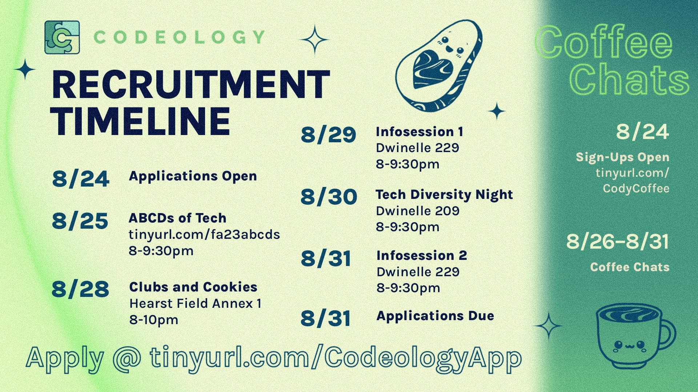
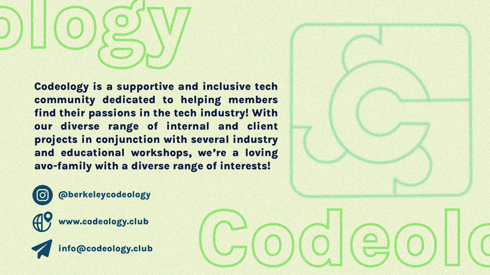
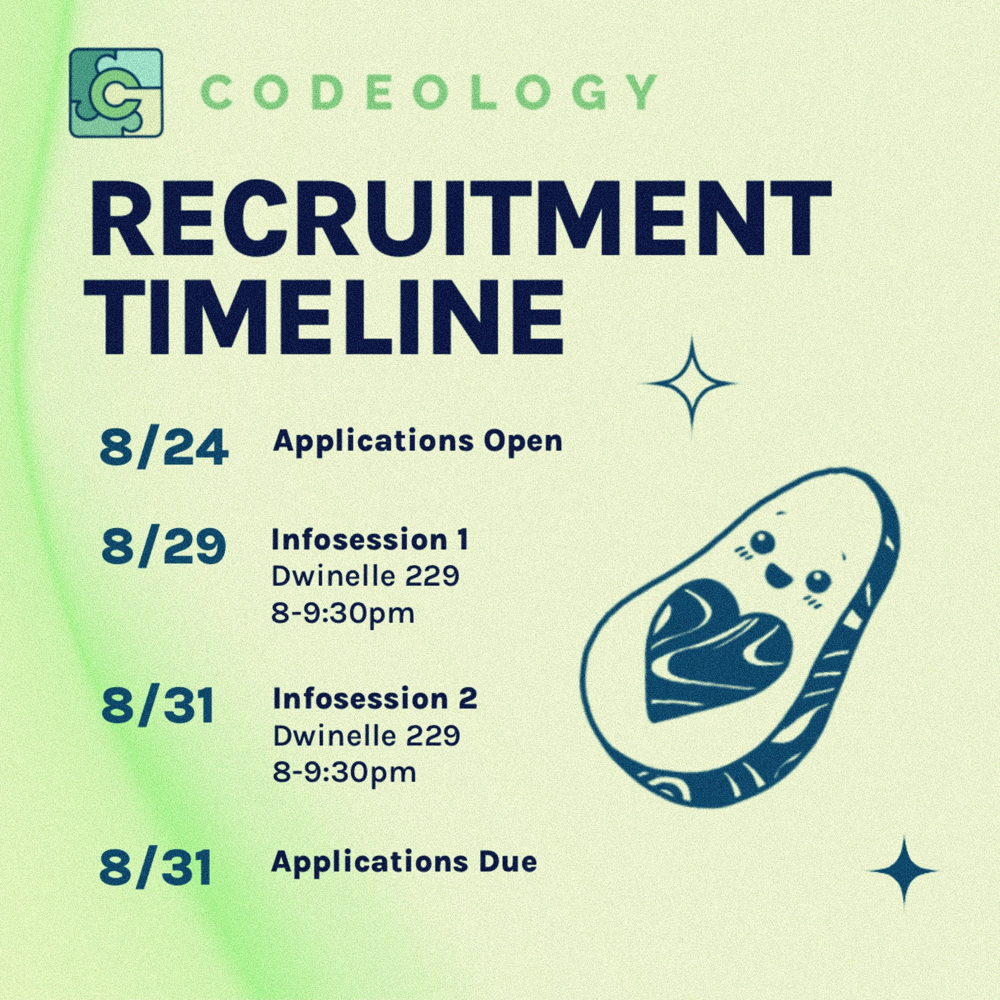
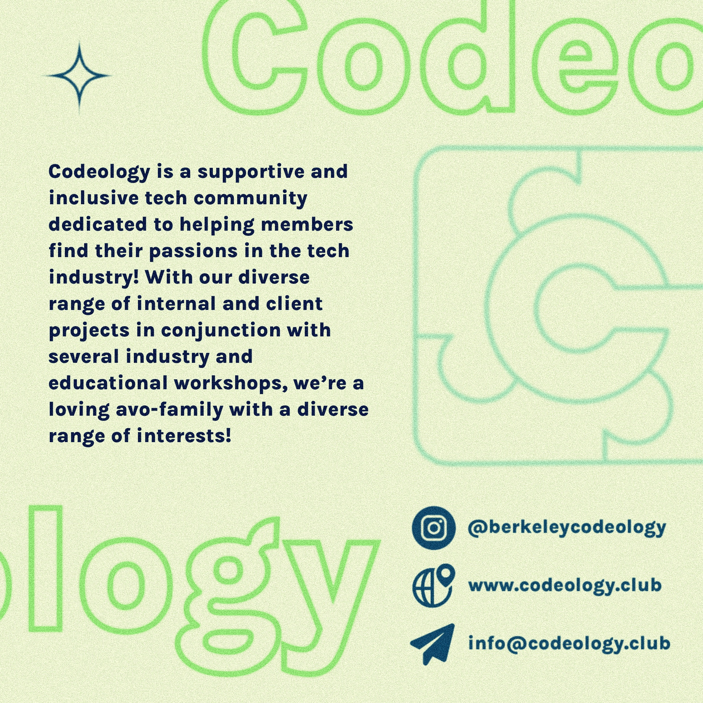
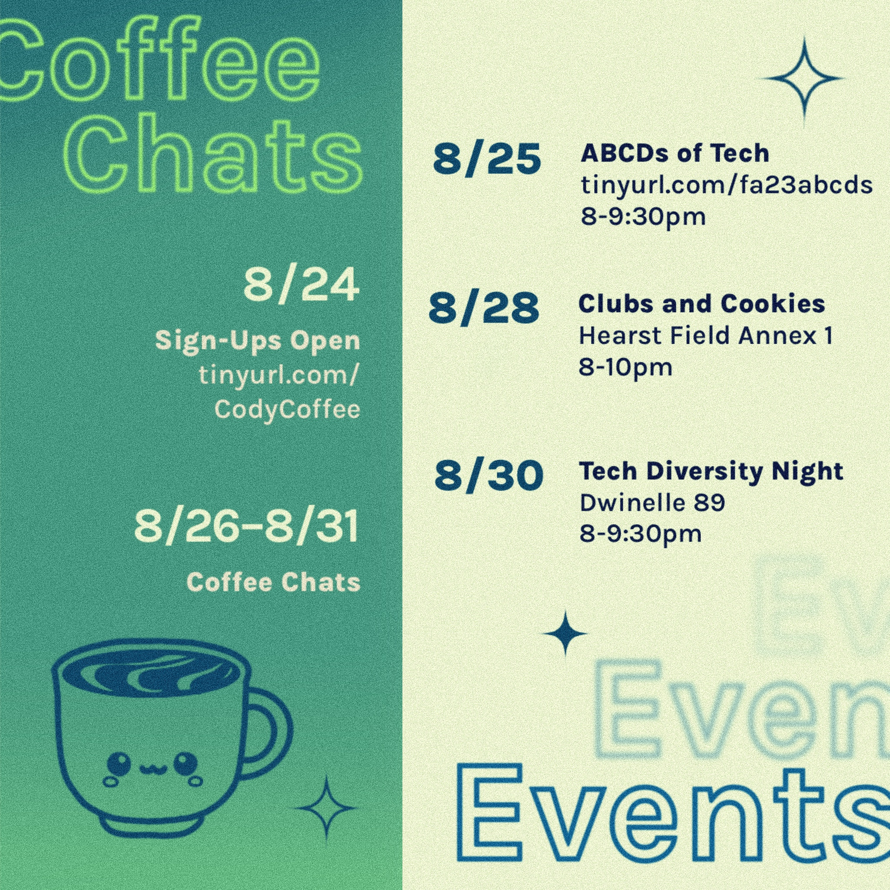

Codeology Recruitment Campaign
A flyer set and social posts for the Fall 2023 recruitment cycle — 420 applications, a club record.
Codeology is a community-focused tech club at UC Berkeley. As Media Director, I aimed to develop promotional materials that appeared polished and professional, yet still emphasized a friendly feel.
This design concept was used for physical flyers and social media posts during the recruitment period, in conjunction with a broader promotional campaign, and resulted in an application count of 420 — one of the highest in club history.


This project presented the unique challenge of producing an easily-readable, eye-catching page while working with a large number of text elements. I used color blocking and typography hierarchy to help organize information, added texture and off-screen elements to create depth, and included hand-drawn graphics to make Codeology’s brand stand out amongst other tech-focused clubs.


